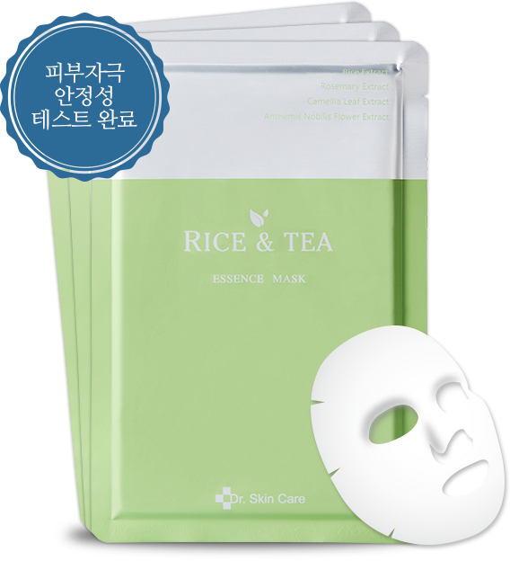
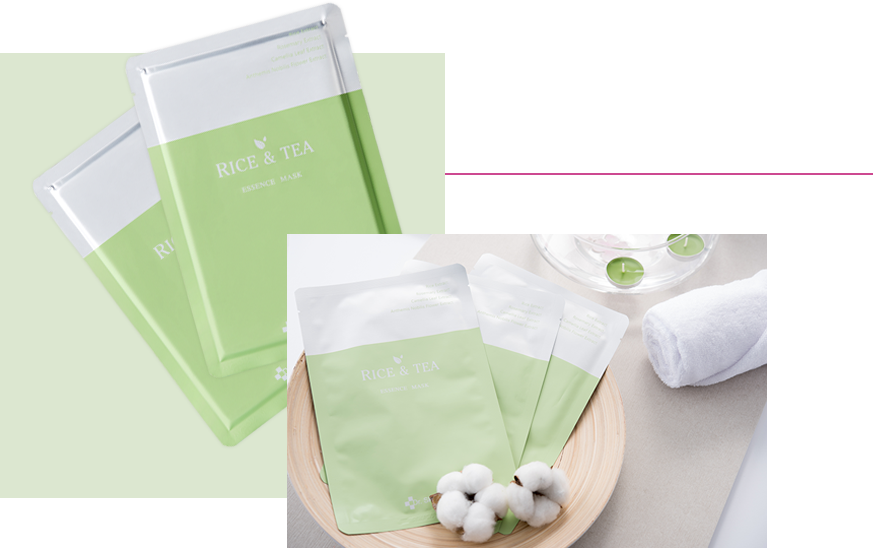

어린피부로
가꾸어주는
스페셜케어
PERILLAESSENCE MASK
보습강화 + 노화방지
쌀 추출물 (OryzaSativa (rice) Extract
단백질과 불포화지방산을 포함한 소량의 무기질, 비타민, 식이섬유 등의 영양분 함유
1. 피부 컨디셔닝 효과 상승
2. 피부에 활력을 부여하여 생기 충전에 도움
3. 피부 결을 부드럽게 하고 수분 공급하여 촉촉하게 관리
4. 항염증 효과로 아토피 예방에 효과적
사람 피부에 시르투인 표출을 조절하는 시르투인 펩타이드가 풍부
(시르투인은 장수 단백질이라고 불릴 정도로 손상으로부터 보호 및 스트레스 완화에 탁월)
녹차추출물 Green Tea
유해물질 제거해주는 역할 및 피부미용 효과
식물성, 항산화제, 항염증제, 항암, 진정제, UVB 차단, 산화방지제, 피부 보습제,
피부 보호제, 피부 유연 화제, 피부 컨디셔닝제, 녹차에서 추출한 천연 식물성분으로
항산화 효과가 우수하며 녹차에 함유되어 있는 폴리페놀이 활성 성분으로 항산화, 항염증,
항암효능을 가지고 있습니다.
녹차의 폴리페놀이 피부 암을 유발하는 UVB를 차단하며 면역기능 억제한다고 증명되었으며
플라보노이드 성분이 있어 피부에 유해한 활성산소를 제거하는데도 효과적입니다.
RICE & TEA ESSENCE MASK
에센스 마스크 특징
- 01. 피부 컨디셔닝 효능
- 02. 피부 보습 효능
- 03. 피부결 관리 효능
- 04. 화장품 천연향 부여
에센스 마스크 사용법
세안 후, 화장수를 이용하여 피부를 정돈합니다.
마스크 시트를 꺼내어 얼굴 모양에 맞게 밀착시킵니다.
약 10~20분 후에 시트를 제거하고, 피부에 남은 에센스를
가볍게 두드려 흡수시켜 줍니다.